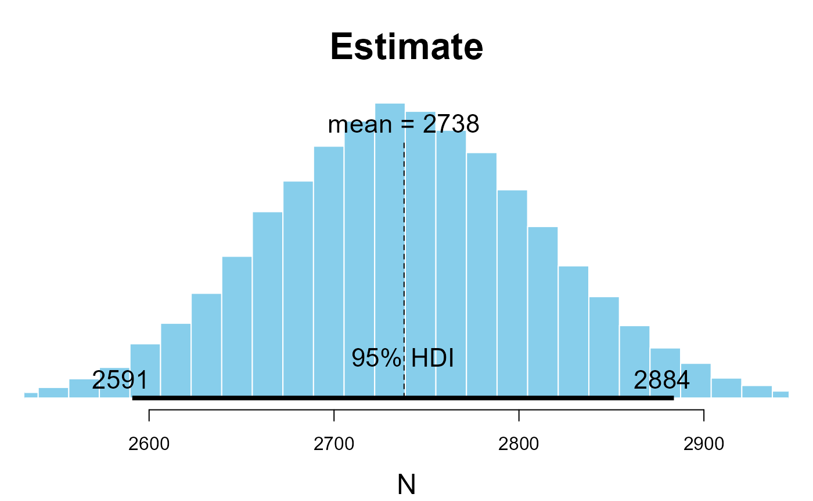

working-with-the-kulan-package.RmdImport some data
The package has some flight datasets inside it that can be used for generating examples. You can add your own data using any of the read functions available in http://www.sthda.com/english/wiki/importing-data-into-r. Usually we use the read.csv() to read in a .csv file. There are options for excel files and text files too.
df<-Kulan::All_Flight_RightTidy the data frame to make it more R friendly
The dataframe has some column names that are not very “R friendly” because, for example, they have spaces in the names (e.g. “Alt above ground” ). The {janitor} package replaces the names with a more standard format (“alt_above_ground”)
df<-df %>%
janitor::clean_names()Get the ground in the image
To calculate the width of a drone image we need to know the height of the drone and the angle of the cameras. The inbuilt functions in the {Kulan} package use the camera dimensions from the cameras used in the field as default values.
df<-df %>%
rowwise() %>%
mutate("strip_width"=Kulan::get_strip_width(`alt_above_ground`))
mean(df$strip_width)
#> [1] 493.2802Get the ground surface distance
To calculate the ground surface distance (1 pixel) there are two functions, one that assumes no distortion due to the angle of the camera and one that allows for distortion (this later function is still in development) .
Simulate a dataset
To simulate a dataset we can use the sim_kulan_data() function. To get help from the package please use the code below:
help("sim_kulan_data")which outputs the details of the function:
n number of transects
ma mean number of animals counted where they are counted
p0 proportion of the transects that will be empty
ml mean length of the transects
w width of the transects (assuming a constant width)
Value simulated data in a dataframe
data=Kulan::sim_kulan_data()Run the Jolly2 model
To run the Jolly2 model we can use the jolly2() function. Again using help() will output a description of the function.
help("jolly2")species_count the column from the dataset with the species counts in
Transect_area the column from the dataset with the transect areas in
Z the stratum area (the total area that we are extrapolating to)
Value dataframe with Jolly II estimate and 95% CI
jolly2(species_count = data$sp_count, Transect_area = data$Trans_area,Z=164*5)
#> Estimate lower_CI upper_CI SE mean.y SD.y Coef.of.Var.y
#> 1 2573.34 2263.567 2883.112 186.566 12.76 12.75972 0.9999782Run the n-mixture model
Finally, to run the n-mixture model you can use the run_kulan_model() function. See more details about this function using help().
help("run_kulan_model")run_kulan_model( p_area = p_area., p_min = p_min., p_max = p_max., no_ind = no_ind., plot.out = “No” )
p_area proportion of the stratum that has been sampled
p_min prior minimum number of animals
p_max prior maximum number of animals
no_ind Indivduals count column from data
plot.out Add a plot (“Yes”) of the distribution of the estimate (default is “No”)
Value dataframe with estimate and hdi
mod1<-run_kulan_model(p_area = .49, p_min = 1000, p_max=4000, no_ind = data$sp_count, plot.out = TRUE)
#> Loading required package: coda
#> Loading required package: MASS
#>
#> Attaching package: 'MASS'
#> The following object is masked from 'package:dplyr':
#>
#> select
#> ##
#> ## Markov Chain Monte Carlo Package (MCMCpack)
#> ## Copyright (C) 2003-2021 Andrew D. Martin, Kevin M. Quinn, and Jong Hee Park
#> ##
#> ## Support provided by the U.S. National Science Foundation
#> ## (Grants SES-0350646 and SES-0350613)
#> ##
#> Loading required package: lattice
#>
#> Attaching package: 'jagsUI'
#> The following object is masked from 'package:coda':
#>
#> traceplot
#> The following object is masked from 'package:utils':
#>
#> View
#> Loading required package: HDInterval
#> Loading required package: mcmcOutput
#>
#> Processing function input.......
#>
#> Done.
#>
#> Compiling model graph
#> Resolving undeclared variables
#> Allocating nodes
#> Graph information:
#> Observed stochastic nodes: 1
#> Unobserved stochastic nodes: 1
#> Total graph size: 6
#>
#> Initializing model
#>
#> Adaptive phase.....
#> Adaptive phase complete
#>
#> No burn-in specified
#>
#> Sampling from joint posterior, 20000 iterations x 3 chains
#>
#>
#> Calculating statistics.......
#>
#> Done.